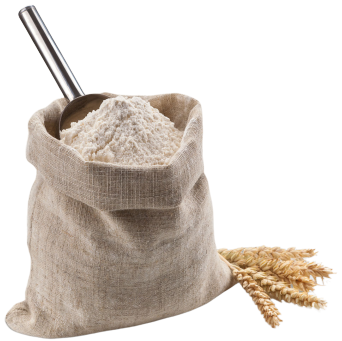
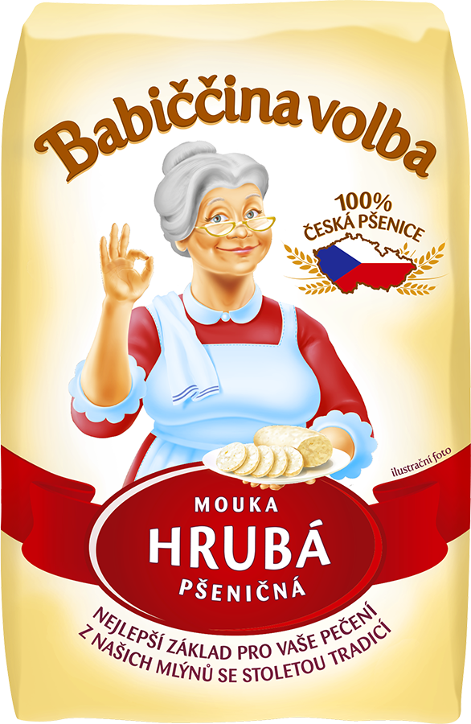
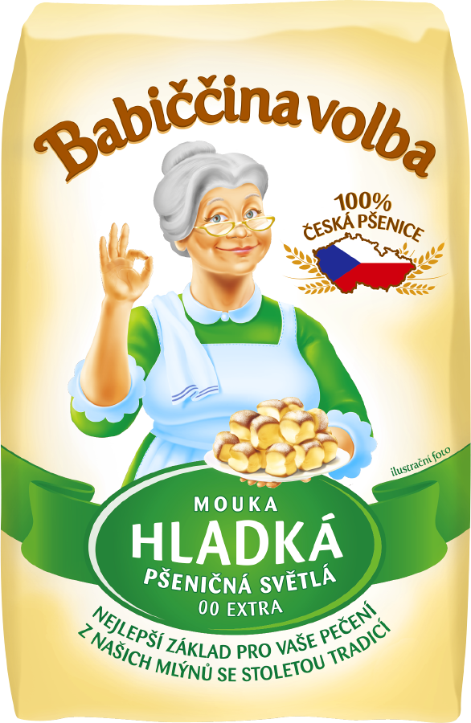

bla bla bla
mouka je best
Co je to mouka ?
Mouka je v podstatě rozmělněná vnitřní část obilného zrna (obilky) s menším podílem otrubnatých částic. Používá se zejména pro výrobu jídel. V české obchodní síti se pšeničná mouka (nejběžnější typ) běžně prodává ve čtyřech druzích rozlišených podle tloušťky zrn.

Druhy mouky
Mouku je možné umlít z každé obiloviny. Kromě pšeničné je oblíbená také žitná mouka, která se využívá především k přípravě chleba nebo perníku.
Známá je také špaldová mouka, vhodná do sladkých i slaných těst. Mouka se dále vyrábí například z ječmene, kukuřice seté, pohanky, rýže, sóji nebo amarantu.
Posledních pět zmíněných mouk jsou mouky přirozeně bezlepkové, bezlepková je ale i deglutenizovaná pšeničná mouka, která svými vlastnostmi zůstává bližší běžné pšeničné mouce (v Česku Jizerka).
Hrubá mouka
Patří do skupiny bílé pšeničné mouky společně s moukou polohrubou a hladkou. Obsahuje sacharidy, škrob a lepek (ten může být zdrojem nejrůznějších problémů). Využívá se při vaření (knedlíky, noky, těstoviny). Produkty z bílé mouky dodávají tělu určitý druh energie, ale sacharidy obsažené v bílé mouce se rychlejí v těle odbourávají a tak máme častěji pocit hladu. Dá se říct, že si tělo dokonce může vypěstovat na bílou mouku závislost, proto bychom se měli snažit nahrazovat ji moukou žitnou. Ta totiž obsahuje vlákninu a minerály, o které bílá mouka přišla při průmyslovém zpracování. Použití hrubé mouky je při vaření stále rozšířené a to hlavně při přípravě příloh k omáčkám, zelí, masu, ale také při vysypávání forem na pečení, jako přídavek do těsta některých moučníků.
Kukuřičná mouka
Kukuřice je rostlina z čeledi lipnicovité, která může mít až šest metrů. Původně pochází z Jižní Ameriky, kde pěstuje již přes 5000 let. Od místních indiánů se kukuřice spolu s Kolumbem dostala do Evropy. Dnes je kukuřice po pšenici a rýži nejpěstovanější obilninou na světě. V Čechách ji na polích najdeme na jižní Moravě. Kukuřice se využívá jako krmivo, dále jako surovina na výrobu cukru, oleje a škrobu. Některé druhy se pěstují jako zelenina. V potravinářství se z kukuřice vyrábí lupínky, mouka, krupice nebo kaše. Zvláště v rozvojových zemích je kukuřice cenným zdrojem obživy.

Pšeničná mouka
Základními produkty české mlýnské technologie jsou při zpracování pšenice hrubá krupice, jemná krupice, krupičné mouky a hladké mouky. Hrubá krupice, jemná krupice (známá jako dehydratovaná krupička) a krupičné mouky (hrubá a polohrubá) jsou velmi světlé a mlýny jich produkují zhruba 15–20 %, vztaženo k hmotnosti zrna. Krupice a krupičky představují pouze několik jednotek procent. Největší objem produkce tvoří hladké (pekařské) mouky – světlá, polosvětlá a tmavá (chlebová). Druhy mouk podle stupně vymletí Vysokovymleté mouky Obsahují více povrchových částí zrna, jsou tmavší, hůře stravitelné, méně trvanlivé, mají výraznější, lehce nahořklou a trpčí chuť, jsou ovšem biologicky hodnotnější.Nízkovymleté mouky Byly z nich odstraněny povrchové části zrna, jsou tedy světlejší, lépe stravitelné, trvanlivější, s lahodnou chutí, ale nižší biologickou hodnotou. Druhy mouk podle typového čísla Mezi odborníky po celém světě je běžné značení mouky podle obsahu popela (nespalitelné, převážně minerální látky obsažené v mouce). Typ mouky je označen číslem, které udává zhruba tisícinásobek hmotnosti popela v mouce. Typové číslo T530 tedy znamená, že 100 kg mouky obsahuje 0,53 kg nespalitelných látek. Jednotlivé typy mouk mají nejen různý obsah popelovin a různou barvu, ale liší se i dalšími vlastnostmi. Je to způsobeno různým poměrem chemických látek v jednotlivých typech mouk, protože vlivem rozdílného vymletí se v nich poměr obalových částí k moučnému jádru mění.
Wikipedie
Spotify playlist